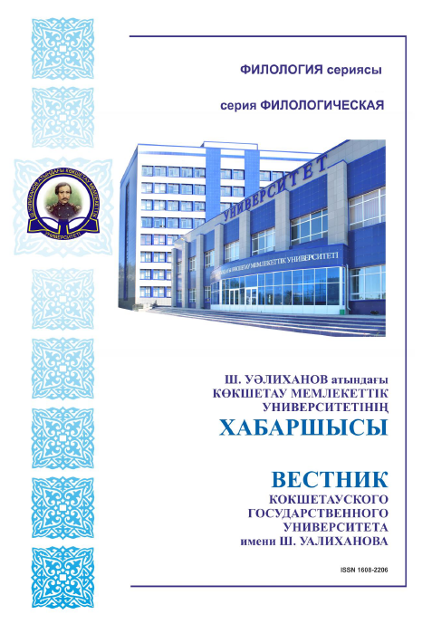

О журнале
Министерство образования и науки Республики Казахстан Кокшетауский государственный университет им. Ш. Уалиханова НАУЧНЫЙ ЖУРНАЛ «ВЕСТНИК КОКШЕТАУСКОГО ГОСУДАРСТВЕННОГО УНИВЕРСИТЕТА ИМЕНИ Ш. УАЛИХАНОВА. СЕРИЯ ФИЛОЛОГИЧЕСКАЯ» Уважаемые коллеги! Кокшетауский государственный университет им. Ш. Уалиханова c 2008 года выпускает филологическую серию научного журнала «Вестник Кокшетауского государственного университета». В данном издании рассматривается широкий спектр лингвистических, литературоведческих и методических проблем, а также отражаются обширные международные научные контакты филологов университета с учеными Германии, Польши, России, Туркии, Болгарии, Китай, Узбекистана, Украины, Татарстана, Башкортостана, Хакасии, Якутии и др. стран. Разделы журнала: 1. Проблемы языкознания 2. Сопоставительное языкознание 3. Литературоведение и фольклористика 4. Методика преподавания языка и литературы 5. Обзоры, критика и библиография На основании решения Коллегии Комитета по контролю в сфере образования и науки Министерства образования и науки РК от 10 июля 2012 года №1082 научный журнал «Вестник Кокшетауского государственного университета имени Ш. Уалиханова. Серия филологическая» внесен в перечень изданий, рекомендуемых Комитетом по контролю в сфере Образования и науки Министерства образования и науки Республики Казахстан для публикации основных результатов научной деятельности. Для публикации в журнале «Вестник Кокшетауского государственного университета имени Ш. Уалиханова. Серия филологическая» принимаются статьи на казахском, русском, английском и немецком языках, содержащие результаты фундаментальных и прикладных исследований в области филологии, с оригинальностью текста не менее 80%. Все поступившие в редакцию рукописи статей для опубликования рецензируются. К рецензированию привлекаются члены редакционной коллегии журнала и другие независимые эксперты. Количество статей в журнале – 45. Периодичность издания – шесть раз в год. Министерство образования и науки Республики Казахстан Кокшетауский государственный университет им. Ш. Уалиханова НАУЧНЫЙ ЖУРНАЛ «ВЕСТНИК КОКШЕТАУСКОГО ГОСУДАРСТВЕННОГО УНИВЕРСИТЕТА ИМЕНИ Ш. УАЛИХАНОВА. СЕРИЯ ФИЛОЛОГИЧЕСКАЯ» Уважаемые коллеги! Кокшетауский государственный университет им. Ш. Уалиханова c 2008 года выпускает филологическую серию научного журнала «Вестник Кокшетауского государственного университета». В данном издании рассматривается широкий спектр лингвистических, литературоведческих и методических проблем, а также отражаются обширные международные научные контакты филологов университета с учеными Германии, Польши, России, Туркии, Болгарии, Китай, Узбекистана, Украины, Татарстана, Башкортостана, Хакасии, Якутии и др. стран. Разделы журнала: 1. Проблемы языкознания 2. Сопоставительное языкознание 3. Литературоведение и фольклористика 4. Методика преподавания языка и литературы 5. Обзоры, критика и библиография На основании решения Коллегии Комитета по контролю в сфере образования и науки Министерства образования и науки РК от 10 июля 2012 года №1082 научный журнал «Вестник Кокшетауского государственного университета имени Ш. Уалиханова. Серия филологическая» внесен в перечень изданий, рекомендуемых Комитетом по контролю в сфере Образования и науки Министерства образования и науки Республики Казахстан для публикации основных результатов научной деятельности. Для публикации в журнале «Вестник Кокшетауского государственного университета имени Ш. Уалиханова. Серия филологическая» принимаются статьи на казахском, русском, английском и немецком языках, содержащие результаты фундаментальных и прикладных исследований в области филологии, с оригинальностью текста не менее 80%. Все поступившие в редакцию рукописи статей для опубликования рецензируются. К рецензированию привлекаются члены редакционной коллегии журнала и другие независимые эксперты. Количество статей в журнале – 45. Периодичность издания – шесть раз в год.